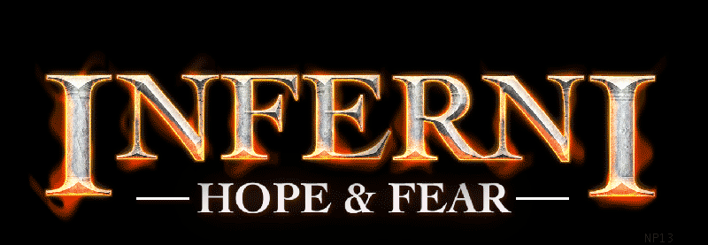

Welcome to...

Inferin: Hope & Fear is a game of strategy and ingenuity for IBM-compatiable PCs with internet modems.
Play with friends, in a game described as "Magic the Gathering meets Hungry Hippos" and is taking the games industry storm.


WISHLIST NOW ON STEAM
JOIN DISCORD
Once, the twin realms were perfectly balanced: our World of Order, governed by universal laws yet bright with dreamers; and the Realm of Chaos, a tumultuous vortex of the people and places lost to time. That was until one day when the equilibrium was disturbed, and our World of Order was reduced to rubble, consumed by the swirling storm.
Many succumbed to the new ever after, but not you – your will shone too brightly for such a fate. Plucked from the vortex by the enigmatic Master, you are shown a lifeline: the World Seed, crucible of all creation magic, and key to recreating the World of Order as you so desire. But there are others who stand in your way – others who will stop at nothing to get their hands on the World Seed and remake the world in their image.
Who will be victorious? Will it be those guided by their strongest hopes who will determine our future? Or will it be those forged in opposition of their darkest fears who will guide our destinies?
Rise, o Wayward, and stake your claim amidst the maelstrom of Chaos!
Inferni in the Press
“As genre mash-ups go, I didn't see this coming” - Rock Paper Shotgun
“Immensely satisfying to play and much more than the sum of its parts” - NME
“It feels like chaotic good… it was fun just working out how cards played and which ones worked best in conjunction with each other” - TheGamer
Socials
Discord YouTube TikTok Twitter Insta Facebook

Copyright 2024 Village Studio Games Limited.
Press enquires to founders@village-studio.com
DP14.